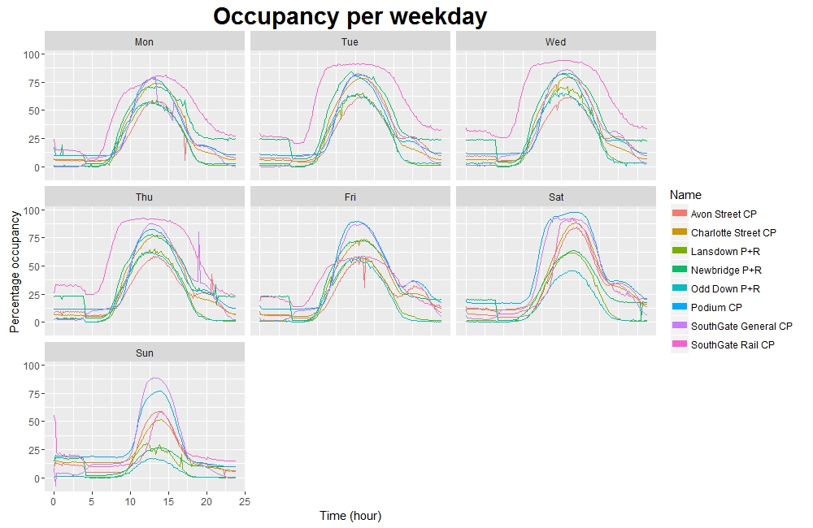

Since mid-October 2014 the occupancy of each of eight car parks in Bath has been recorded every five minutes. Therefore the aforementioned dataset is pretty large, and constantly growing: it currently contains over 1.6 million records.
Before we began doing any serious work on the machine learning aspect of the project, I thought it would be a good idea to investigate the data we will be using; and inspired by similar analyses I had come across online I decided that I would try to produce one visualization of the data each day for one month.
If you are interested in the full, nitty-gritty, R-splattered details of how I went about this then feel free to have a look through my original posts. What follows here is a somewhat condensed version highlighting the interesting bits!
Trends in car park occupancy
I started off by having a look at some of the general trends in the data, such as how full each car park is, on average, on each day of the week.
As you might expect, in general the car parks tend to fill during the morning and empty in the afternoon, with most reaching their peak occupancy at about 13:00. However, there are some subtle points of interest here.
For example, during the working week the “peak” for SouthGate Rail car park is noticeably broader and squarer than those of the other car parks. This is due to the fact that SouthGate Rail is used only by railway commuters: therefore it tends to fill up quickly early in the morning, and then empty quickly later in the evening.
However, if we compare this to the weekend we see that SouthGate Rail is not so busy and instead the Podium and SouthGate General car parks tend to be busiest - this perhaps isn’t surprising, seeing as these are the closest car parks to the town centre and therefore are generally used by people visiting the local shops. Interestingly Friday is closer to this pattern than it is to the other weekdays, suggesting perhaps that Friday is a popular day to work from home.
The dataset also includes a “Status” column, indicating the change in occupancy from one record to the next (although this doesn’t seem to be recorded correctly for Podium car park).
This helps us to see how “dynamic” the occupancy of each car park is: for example, SouthGate Rail and the P+R car parks spend a significant amount of time as “Static” (meaning that there was no net change in occupancy from the previous record), whereas the shopping car parks such as SouthGate General spend more time filling or emptying. While “Static” doesn’t necessarily mean no cars entered or exited, this still gives us a good idea of which car parks have a higher turnaround of cars.
So far we’ve been looking at a breakdown by weekday, but we can see other interesting trends if we look at different time periods. The plot below shows the average occupancy of each car park in each week of the year (the label shows the week with the highest average occupancy).
While we see some wild fluctuations, there is a point worth noting here: the P+R car parks in particular tend to be used most around weeks 46-48, which translates to the latter half of November through to early December. I have absolutely no idea why this is the case.
Dubious records
On the surface, these trends shine through; the result of taking averages of various combinations of over 1.6 million records. But dig a little deeper and it turns out that like any genuine real-life dataset, this one is full of quirks.
Let’s strip down that last chart and just look at one car park: Newbridge P+R.
It’s clear that we have some outlying points here. It turns out that if we start looking for them, then there are quite a lot of “strange” occupancies.
Whereas a car park at 0% or 100% capacity might not be too unusual, a car park at more than 100% capacity shouldn’t be too common. Having said that, on occasion this can be explained - as the dataset’s documentation notes - by cars being parked in unofficial spaces, or by cars prowling full car parks in hope of nabbing a spot as someone else leaves. (Notice most of the full/overfilled records are from the shopping car parks.)
But we also have a large number of records where there were somehow fewer than zero cars in the car park. Obviously when this happens there must have been some sort of error - and in most cases, the method of data collection is the culprit.
Again referring to the documentation we learn that occupancy is measured by keeping a running total of two counts - entries and exits. For each car park, there is a sensor on each gate. When a car goes in, we add 1 to the occupancy, and when a car leaves, we subtract 1. Simple enough, and generally effective.
Every so often though one of these sensors fails, and we end up with a monotonic increase or decrease in occupancy until someone notices and runs down to the offending car park to change the sensor. The occupancy is then manually recalibrated (this happens on occasion anyway, usually overnight). Broken sensors explain the vast majority of the remaining “strange” records - in the case of the negative occupancy records, 99.8% of them are relatively close to zero.
But then again, some aren’t relatively close to zero. The 26 records where an occupancy of about -15000 is recorded all come from SouthGate General car park, from a single afternoon - there is just an immediate drop from one record to the next, and then an immediate rise a couple of hours later. But even if we shift the records back up to approximately where they should be (by adding about 15220 to the recorded occupancy) we can see that they don’t line up with the records on either side.
OK, in case it wasn’t clear, I wasn’t entirely serious earlier when I said I didn’t know why the P+Rs were busiest in early December (I think anyone who’s lived in Bath knows why!). However, in the case of these rogue records I genuinely have no idea why they are so wrong; my best guess is some sort of error in the process of uploading the records from the sensors to the online database.
I can also now confess that the plots which appear in the first section of this piece are based on a somewhat tidied version of the data where I have removed any dubious records. These records do have an effect on calculated averages, as can be seen by comparing the plots below - the second plot is identical to the plot from earlier, the first is the same plot but with dubious records included.

Repeated records
There are two date-time values associated with each record: LastUpdate, which is the time that the record was taken, and DateUploaded, which is the time that the record was uploaded to the Bath Hacked datastore.
In theory, a new record is taken at each car park every 5 minutes, and then the eight new records are uploaded to the datastore in a batch shortly afterwards. In reality, a new record is usually taken every 5 minutes, and the most recent record from each car park is usually uploaded in a batch shortly afterwards.
Occasionally a new record is not taken before the next upload is due. When this occurs the previous record is just uploaded again - with the same LastUpdate time, but a new DateUploaded time. This ensures that a fresh batch of 8 records (one from each car park) is added to the datastore every 5 minutes.
Therefore if we judge the “uniqueness” of a record by LastUpdate we end up with quite a few duplicate records. In fact about 17% of all records in the dataset are repeated uploads. The vast majority of records which are repeated are only repeated once; but in the most extreme cases the same record is uploaded over 1000 times before a new record is taken.
The delay between LastUpdate and DateUploaded is generally very short, as expected; but sometimes a very long time can pass before a new record is taken. Don’t be too shocked by the graph below - it uses a log scale on the y-axis, so the overwhelming majority of records are uploaded shortly after being taken. However, if no new record is taken in a 5-minute interval then a repeat record is uploaded instead, so the difference between LastUpdate and DateUploaded increases: the largest difference is over 300000 seconds (which equates to about 3.5 days).
We can see that there are also a surprisingly large number of records where the record was apparently uploaded to the datastore before it was actually recorded. All such records are from the two SouthGate car parks, but again I don’t have a good explanation for why this occurs.
Now, just a few short paragraphs ago I claimed that every batch uploaded to the datastore contained 8 records. Alas, once again I was slightly deceitful: on occasion there are batches containing as few as 4 records.
(Note: the y-axis label on the right-hand plot should more accurately read: “Of all the records which were uploaded to the datastore in a batch of this size, the proportion which came from each of the car parks”. But this is rather a mouthful.)
Closing thoughts
I was pleasantly surprised when I was asked to produce this write-up for Bath Hacked. While carrying out this project I never really thought I was producing something that other people would eventually be interested in reading!
I’m not ashamed to admit that when I set out upon this prolonged analytical journey back in early November I didn’t really know what I was doing. To begin with I intended it to be purely a learning exercise; a means of improving my data manipulation and visualization skills using R. And it did indeed serve this purpose very well.
However, once I began investigating the dataset in more and more detail, I found myself becoming more and more interested in what I was finding, and more and more focused in what I was looking for. When I finished the project thirty days after I began, I was relieved to be free of the burden of it, but simultaneously a little sad that a previously (admittedly briefly) constant part of my life would now be something to look back on rather than forward to.
I suppose if you spend enough time with anything and get to know it well enough you risk becoming somewhat emotionally attached to it.
This post was featured on the Bath: Hacked blog (and if you want to read it again there, by all means feel free to do so! You can find it here).